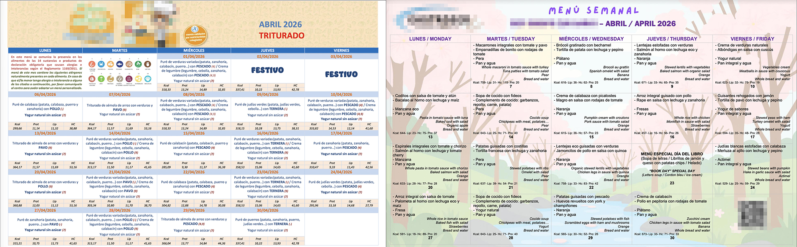
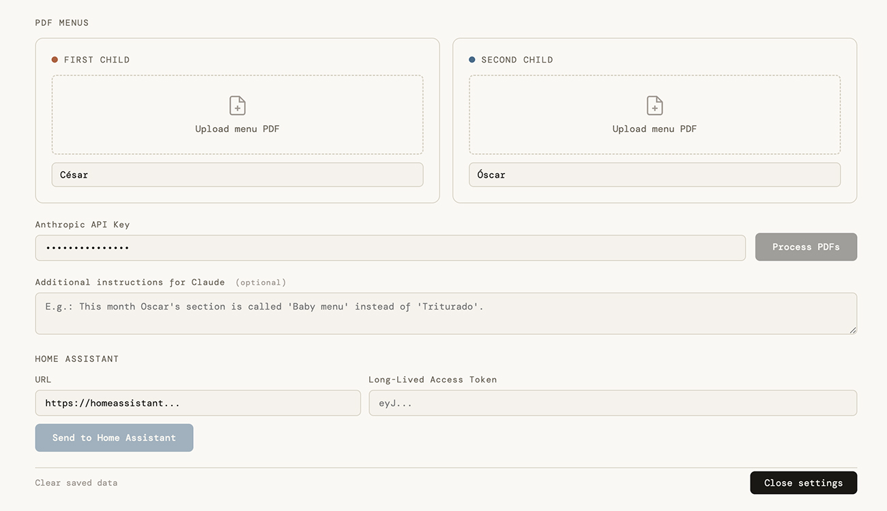

The Problem
My two kids go to different schools (normal school and day care). Every month, both schools send a PDF with the lunch menu for the entire month. Simple enough, except I kept running into the same annoying problem: I'd plan dinner, start cooking, and then realise one of the kids had already eaten that exact thing for lunch. Omelette again. Fish again.
The solution should have been easy: just check the menus before cooking. But in practice, pulling up two different PDFs (each of them with their own formatting and crazy kid-friendly design), finding the right day in each, and cross-referencing them every evening was just enough friction that I kept forgetting. I needed something that would surface the right information at a glance, without any effort on my part.

Here is an example of what I have to deal with every month... Aren't these supposed to be for parents? Why the colours and illustrations? 😅
That's when I started thinking: could I build a small AI web app to fix this? And could I surface the result directly on my Home Assistant dashboard, so it's just there every evening when I'm thinking about dinner?
I should say upfront: I'm not a Home Assistant power user. I had played a bit with Lovelace cards and automations, but I knew nothing about setting up custom sensors. I figured it out as I went, mostly by asking Claude to explain things as it helped me build them.
The Idea
The concept was straightforward:
- Upload both PDF menus once a month
- Use Claude's API to extract the correct meal data from each PDF
- Display a combined calendar showing both kids' lunches side by side
- Push today's meals to Home Assistant so they show up on the dashboard automatically
I built the whole thing in collaboration with Claude, brainstorming and chatting to figure out the best way to process and display the data. And I'm really happy about the result.
The Web App
The app is a single HTML file — no framework, no build step, no server. It lives in Home Assistant's static file folder, which means it's always accessible from the local network without running anything separately. You open it, upload the two PDFs, and hit a button.

A very simple input layout screen. Once processed, this gets hidden under a settings icon ⚙️.
PDF Parsing with Claude
The trickiest part of the project was reliably extracting meal data from the school PDFs. Each school has a different format, and the layouts are inconsistent — tables with day numbers at the bottom of cells, bilingual content in Spanish and English, special event days with no standard format.
The final approach uses Claude's vision capabilities to read each PDF directly. The prompt instructs Claude to read the table cell by cell, extract only the Spanish meal names, and verify that no entries fall on weekends.
That last step is the key one. Because the day number appears at the bottom of each cell rather than the top, Claude can drift by one when reading — associating a meal with the previous day's number instead of the current one. Checking for weekend entries is a reliable way to catch this: if a meal lands on a Saturday or Sunday, the whole sequence has shifted and needs correcting.
To be honest, I'm not completely sure the prompt will work 100% of the time, so I added an optional text box to pass additional instructions to Claude — for example: "This month there is a special national dish day for Greece, which has a different format."
The Calendar View
The result is a month-view calendar with colour-coded chips for each kid per day. There's also a list view for scanning linearly, and inline editing for correcting any days Claude got wrong. Everything is saved to localStorage so the calendar loads instantly on subsequent visits without re-processing. The two kids' calendars are independent, which helps on the odd days when the youngest goes to day care but his older brother is home.
Settings Panel
All configuration — Anthropic API key, kid names, PDF upload, Home Assistant URL and token, and the optional free-text field for extra instructions — lives behind a collapsible settings panel. The default view is just the calendar. The app feels like a dashboard first and a tool second.
The Home Assistant Integration
Once the calendar is processed, hitting "Enviar a Home Assistant" (the send button in the app) pushes the full month's data to HA. From there, everything is automatic.
How the Data Flows
The web app encodes the JSON data as base64 and calls a shell_command defined in HA's configuration.yaml. That command runs a one-line Python snippet that decodes the data and writes it to a file called lunch_data.json in HA's www folder.
Four command_line sensors — lunch_kid1_today, lunch_kid2_today, lunch_kid1_tomorrow, and lunch_kid2_tomorrow — read from that file daily, look up the relevant date, and expose the meal as a standard HA sensor state. These are plain sensors that any card, automation, or notification can read from.
command_line:
- sensor:
name: lunch_kid1_today
scan_interval: 86400
command: "python3 -c \"import json,datetime; data=json.load(open('/config/www/lunch_data.json')); today=datetime.date.today().isoformat(); meals=[m['meal'] for m in data['kid1']['meals'] if m['date']==today]; print(meals[0] if meals else 'Sin menú hoy')\""The Midnight Automation
A simple HA automation runs at 00:01 every night and calls homeassistant.update_entity on all four sensors. This ensures they always reflect the correct day — today's lunch flips to the new day at midnight, not at some arbitrary time based on when HA last restarted.
alias: Actualizar menú escolar
trigger:
- platform: time
at: "00:01:00"
action:
- action: homeassistant.update_entity
data:
entity_id:
- sensor.lunch_kid1_today
- sensor.lunch_kid2_today
- sensor.lunch_kid1_tomorrow
- sensor.lunch_kid2_tomorrowThe Dashboard Cards
Two Lovelace cards sit on the main dashboard — one for today, one for tomorrow. Each uses vertical-stack-in-card with mushroom-template-card components styled to look like a single unified card. The header shows the date in Spanish, with the cutlery icon turning grey on non-school days. Each kid gets their own row with name and meal.
Tapping either card opens the full web app, so manual edits and reprocessing are always one tap away.
What I Learned
- PDF parsing is harder than it looks. The most persistent bug was Claude associating meal content with the wrong day number, because the number appears at the bottom of each cell rather than the top. The fix was a weekend verification step — if a meal lands on a Saturday or Sunday, the whole sequence has shifted and needs correcting.
- Prompt engineering is iterative. Each version of the extraction prompt was a direct response to a specific failure mode. The final prompt is more specific than I would have written upfront, but it was shaped by real failures.
- Home Assistant's
configuration.yamlstill matters. Some things — shell commands,command_linesensors — can't be done through the UI and require editing config files directly. That's not a complaint, just something to be aware of when planning an integration. - The 255-character limit on
input_texthelpers is a real constraint. We went through a few approaches before landing on theshell_command+ file approach, which is cleaner anyway. - Vibe coding works best as a collaboration. The best results came from describing the problem clearly, reviewing what was built, and being specific about what was wrong. For me, as someone new to this kind of project, that feedback loop was the whole thing — I wasn't writing code, I was steering. Claude.ai was better for the iterative UI and prompt work, while Claude Code was more useful when thinking through architecture.
The Result
Once a month, I spend about two minutes uploading PDFs and hitting a button. From that point, the dashboard shows today's and tomorrow's lunches for both kids automatically, every day, on every device in the house.
The dinner warnings have already saved me from serving salmon or green beans twice in one day more than once. Small problem, satisfying solution.
The next step is probably a dinner planner that actively suggests what to cook based on what to avoid — but that's a project for another month.